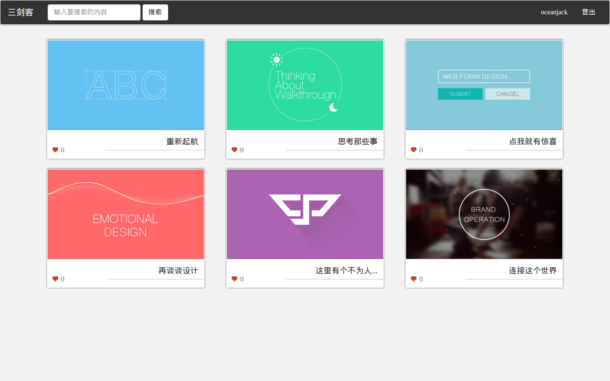
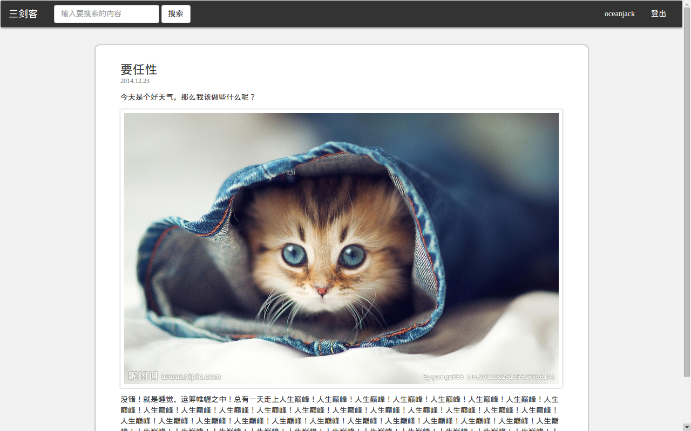
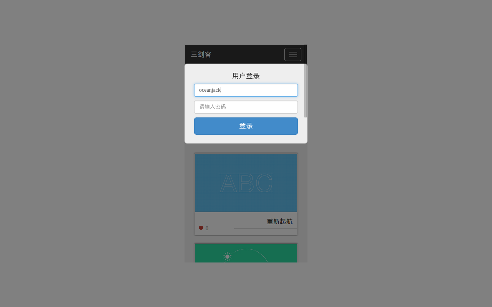

本篇介绍关于如何使用LeanCloud，jQuery，Bootstrap来搭建一个网站。
这几天还在研究学习并制作这个网站，所以本篇持续更新中。LeanCloud（戳官网）用于网站的后台，jQuery作为js的库使用，Bootstrap作为css库使用。
首先LeanCloud提供了一个后台，本例使用了JavaScript的API并写在了前端脚本文件中，这会使KEY暴露出来。不过，LeanCloud提供角色控制ACL，所以可以避免一些麻烦。但是，还是要考虑架一个Node.js后台，一些请求的逻辑不方便都暴露出来。戳快速入门，详细一些的教程的话在这里，平台提供了登陆注册等功能，所以也提供了一个默认的数据库及一些默认的表，可以在控制台方便的查看到数据库的信息并进行操作。如此节省了一些后台开支，可以更迅速的搭建出一个相对稳定可靠的后台。
演示请戳这里
首页
文章页
手机端
声明下图示是临时的...